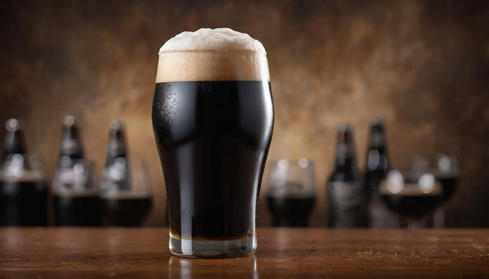
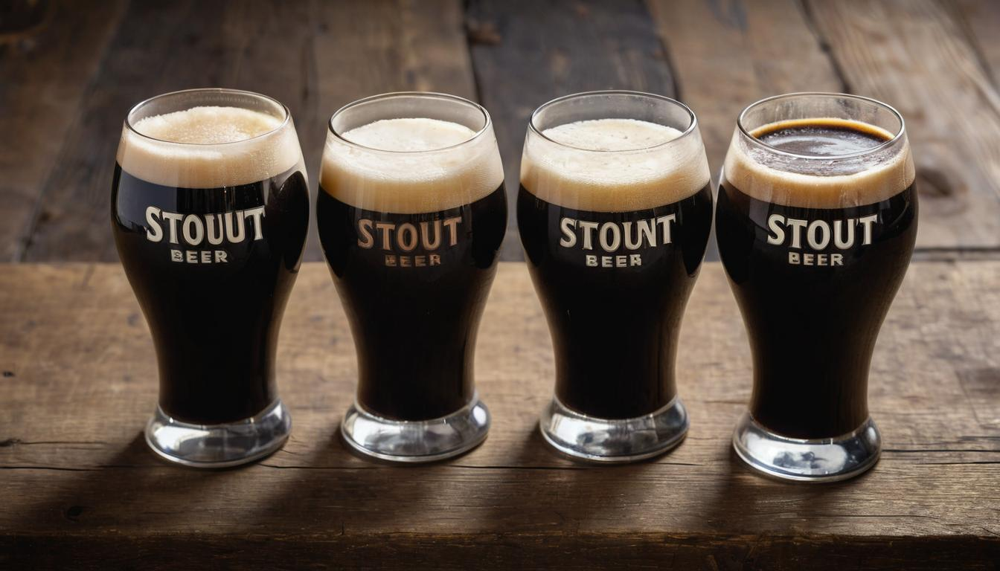
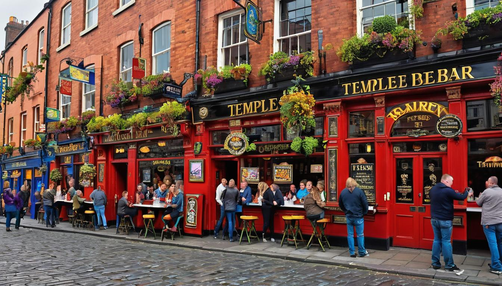

Stout Beer For Dark Beer Lovers
Stout beers hold a world of rich, complex flavors just waiting to be explored. From the slightly bitter notes of a dry stout to the creamy sweetness of a milk stout, each type offers its own delightful twist. For any beer enthusiast keen on discovering the depths of these dark brews, knowing where to start can be both exciting and overwhelming. Yet, understanding the variety of stouts available is essential to elevating your beer-tasting journey.
Through extensive research and insights from tastings at local breweries, we've gathered comprehensive information to guide you through this flavorful adventure. Our deep dive includes descriptions of different stout variations, from the well-known Guinness Dry Stout to the more robust Imperial Stout. This guide seeks to answer your questions about where to find these gems online or at your neighborhood store, giving you an informed edge in making your next choice. Let's embark on this journey together and uncover what makes stouts such an irresistible choice for beer lovers.
A stout beer is a dark, rich, and full-bodied ale known for its bold flavors of roasted malt, coffee, and chocolate. It typically has a higher alcohol content and a creamy texture, making it a popular choice for those who enjoy robust and flavorful brews.

What is a Stout?
A stout isn't just any ordinary beer – it’s a special, top-fermented brew esteemed for its deep, intense flavors and rich texture. What sets it apart from other beers are its rich, dark colors, which mirror the profound complexities found within. But how does this dark beer acquire its distinct characteristics? Let's uncover the story behind this unique beverage.
In the 18th century, stout beers were actually an offshoot of porters. As time passed, stout beers developed their own identity through brewing methods, producing a flavorful beer category unlike any other. This transformation saw stouts taking on new, intensified characteristics, setting them apart as a separate beer type. The use of roasted malt or barley is what gives stout its dark hues and bold flavors. It's these exact flavors that make stouts stand out as a distinctive choice for those seeking more in-depth tasting experiences.
Key Characteristics of Stouts:
| Characteristics | Description |
|---|---|
| Roasted Malt | The use of roasted malt or barley distinguishes stouts from other beers, lending them their deep color and robust flavors reminiscent of coffee and chocolate. |
| Complex Flavor Profile | When you savor a stout, you're treated to a symphony of tastes – from the robust bitterness of coffee to the sweet indulgence of caramel. |
| Creamy Texture | Stouts often boast a velvety-smooth mouthfeel, adding to the overall indulgence with each sip. |
The result? A beer experience packed with layers of flavor and aroma that entice both seasoned beer enthusiasts and adventurous newcomers seeking something intriguingly different.
Imagine inhaling the rich aroma of freshly brewed coffee and indulging in velvety smooth chocolate – these are just some of the experiences offered by a well-crafted stout.
Simply put, stouts are an embodiment of depth and complexity - making them a truly distinctive option for anyone who appreciates the intricate world of craft beer.
Now that we've explored the rich tapestry of flavors woven into stouts, let's journey deeper into the world of stout beers by examining some popular types and styles.
Popular Types and Styles
Stout beers come in a delightful variety of styles, each offering its own unique set of characteristics. While it's easy to assume that one stout is pretty much like another, these styles differ significantly in flavor and strength.
Dry Stout (Irish Stout)
One of the most recognizable stout styles is the dry stout, also known as Irish stout. Think Guinness - it's the perfect example. This style tends to be less sweet than others, with a distinct roasted flavor and sometimes a subtle bitterness. The dryness comes from the use of roasted barley, which imparts that unique bite.
Oatmeal Stout
Next up, we have the oatmeal stout. Brewed with—yes, you guessed it—oatmeal, this style stands out for its smoother and fuller body. The addition of oatmeal lends a creamy texture to the beer while enhancing its overall mouthfeel. Samuel Smith's Oatmeal Stout is a prime example of this style, loved for its velvety richness.
The use of oats in oatmeal stouts also contributes to a silkier mouthfeel and a slight sweetness that balances out the roasted malt flavors beautifully. In short, this style makes for a more rounded and palatable drinking experience.
Milk Stout
Now, let's talk about milk stout. Yes, you read that right—milk! This intriguing style contains lactose, also known as milk sugar, which adds a delightful touch of sweetness and creaminess to the beer. Founders Breakfast Stout is a fantastic representation of a well-crafted milk stout, boasting a luscious profile that's sure to please those with a sweet tooth.
It's worth noting that the addition of lactose in milk stouts has an interesting effect: it doesn't ferment during the brewing process, which lends the beer its characteristic sweet and creamy qualities without increasing its alcohol content.
Imperial Stout
Moving on to the heavy hitters, we have the imperial stout. These robust brews are characterized by their high alcohol content and bold flavors. Often aged in barrels for additional depth and complexity, imperial stouts are known for their commanding presence on the palate. Examples like North Coast Brewing's Old Rasputin showcase the intense and rich nature of this style.
What sets imperial stouts apart is not just their elevated alcohol content but also their ability to carry complex flavors like chocolate and coffee with finesse while delivering a truly substantial drinking experience.
Foreign Extra Stout
Last but certainly not least, we have the foreign extra stout—a style that tends to be higher in alcohol than dry stouts while offering a more intense flavor profile. Guinness Foreign Extra is an exemplary choice within this category, celebrated for its bolder taste and higher ABV.
If you find yourself particularly drawn to bold flavors and slightly increased alcohol levels, foreign extra stouts might just become your go-to choice when craving something with an extra kick.
These various styles offer a diverse array of tasting experiences. With such distinct profiles, there's always something new to explore within the world of stout beers. Whether you're in search of velvety smoothness or robust richness, there's undoubtedly a stout style tailored perfectly to your preference waiting to be discovered.
As we continue this journey into the intricate world of beer brewing, it's time to uncover the foundational elements that give rise to the myriad flavors and sensations found in every sip—the essential players behind every brew: Malt, Hops, and Water.
Key Ingredients: Malt, Hops, and Water
When it comes to crafting a perfectly balanced and flavorful stout beer, the careful selection and combination of key ingredients play a pivotal role. Let's break down each of these crucial components and their impact on the flavor profile of stout beers.
Malt
Malt is the backbone of stout beers and is responsible for imparting that signature dark color and deep, toasty flavors. The roasting process is paramount in developing these characteristics, as it caramelizes the sugars present in the malt, resulting in rich, complex flavors. While all stouts lean heavily on roasted malts, different varieties can be used to create a wide spectrum of flavor profiles. For instance, chocolate malt brings in notes of cocoa and coffee, while roasted barley introduces a deeply roasted, slightly bitter flavor.
Hops
In contrast to the dominant influence of malt, hops provide a balancing act by introducing bitterness to counter the sweetness of the malt. Although their presence may not be as pronounced as in other beer styles, hops still contribute significantly to the overall taste of stouts. Different types of hops can bring varying levels of bitterness and aroma to the brew, contributing to the complexity of the final product. For instance, Fuggle hops can add earthy and woody undertones, while East Kent Golding imparts delicate floral and herbal notes.
Water
The mineral composition of the water used in brewing plays a crucial role in shaping the flavor profile of stouts. Hard water containing higher levels of calcium and sulfate is often preferred for brewing stouts due to its ability to enhance the richness of malt flavors. This unique mineral content acts as a catalyst for extracting deep, robust flavors from the roasted malts, resulting in a more pronounced and satisfying taste experience.
Consider the iconic Guinness Foreign Extra Stout with its distinctive boldness – it owes much of its robust flavor profile to Dublin's hard water with elevated levels of chloride and sulfate. This particular water composition contributes significantly to the full-bodied and rich character that has become synonymous with this renowned stout.
Understanding how these fundamental ingredients—malt, hops, and water—contribute to the overall profile of stout beers allows us to appreciate the intricate alchemy at play behind every sip of this beloved beverage.
As we grasp the foundational elements that define stout beers, our journey leads us to explore the diverse flavor profiles that stem from these key components.
From Sweet to Bitter: Flavor Profiles
Stout beers offer a delightful range of flavors, ensuring there's one to suit your taste. Let's dive into the different flavor profiles in detail.
Sweet Stouts
Sweet stouts are crafted for those inclined towards sweeter flavors. These stouts feature indulgent chocolate, creamy caramel, and smooth vanilla on the palate. The emphasis is on creating a pleasant, dessert-like experience that isn't overpoweringly sweet, offering balanced sweetness that pairs well with the robust nature of the stout style. The sweetness often comes from unfermentable sugars like lactose, adding body and richness without increasing alcoholic content. This contributes to a creamy texture and an overall smooth finish, making this beer a delight for anyone with a sweet tooth.
For instance, Samuel Smith's Oatmeal Stout is celebrated for its smoothness and hints of chocolate and coffee, making it ideal for those drawn to sweeter, milder flavors. This type of stout also serves as a great entry point for those new to stout beers.
Bitter Stouts
On the other end of the spectrum, bitter stouts offer a bold contrast in terms of flavor. Dry stouts and foreign extra stouts fall under this category, presenting robust roasted coffee notes, hints of burnt sugar, and a rich dark chocolate essence. These stouts are renowned for their invigorating bitterness that serves as a perfect counterbalance to their inherent richness.
The bitterness in these stouts is often achieved through the unique roasting process of malted barley, resulting in the development of complex flavors characteristic of these styles. It's important to note that while these stouts do carry bitterness, it's not overwhelming; rather, it's carefully balanced to complement the other elements in the beer. Moreover, their pronounced bitterness offers an intriguing depth that appeals to those seeking a more intense tasting experience.
Take Guinness Foreign Extra Stout as an example; it has gained popularity due to its memorable blend of robust coffee and bittersweet chocolate flavors, creating an exceptionally complex profile with a deep and enduring finish that lingers on the palate.
In summary, stouts offer enticing taste experiences, from sweet and mellow to robust and bitter. Understanding these distinct flavor profiles allows enthusiasts to discern their preferences and savor the diverse characteristics that stout beers have to offer.
Now, let's explore the alcohol content and color variations that distinguish various types of stout beers.
Alcohol Content and Color Variations

When it comes to stout beers, a crucial aspect to consider is their alcohol content. This can greatly influence the taste and overall experience of enjoying a stout. The alcohol by volume (ABV) in stouts can range from relatively low to impressively high, catering to diverse preferences and drinking experiences.
Alcohol Content
Stout beers cover quite a range when it comes to alcohol content. For instance, Dry Stouts typically have an ABV of 4-5%, making them a lighter option for those seeking a milder beverage. On the other end of the spectrum, Imperial Stouts boast a much higher ABV, often around 8% to 12% or even more in some cases. The richer, bolder flavors of Imperial Stouts are complemented by their higher alcohol content, offering a more robust drinking experience.
It's important to understand the impact of alcohol content on the overall flavor and body of a stout. Higher alcohol content tends to lend a fuller mouthfeel and richer taste, often with warming characteristics due to the presence of more ethanol. Conversely, lower ABV stouts may have lighter, crisper profiles that highlight different aspects of the brewing process, allowing for a more refreshing drinking experience.
Color
In addition to alcohol content, the color of stout beers is another defining characteristic that adds to their allure. Stout beers generally exhibit colors ranging from deep mahogany brown to an imposing pitch black hue. These variances in color are primarily influenced by the level of roasting applied to the malt during the brewing process.
The Standard Reference Method (SRM) is used as a scale to measure the color intensity in beer, including stouts. The SRM for stouts can span from 30 to well above 40, reflecting the wide spectrum of rich, dark colors these beers can attain.
For instance, a Dry Stout may showcase a color within the range of 25-40 SRM, conveying a deep yet approachable darkness. Meanwhile, Imperial Stouts often fall within the 40-80 SRM range, presenting a mesmerizingly opaque and intense blackness that hints at their bold and complex flavor profiles.
Understanding the varying alcohol content and coloration within stout beers offers valuable insights into their depth of character and diverse sensory experiences. Whether you prefer the robust strength of an Imperial Stout or the balanced richness of a Dry Stout, these considerations play a significant role in your enjoyment and appreciation of this beloved beer style.
As we seek out the finest stout beers available, it's essential to know where these delectable brews can be found. Join me as we explore the best places to uncover these liquid treasures.
Best Places to Find Stout Beers

When it comes to sourcing the finest stout beers, your options are as diverse and rich as the beverages themselves. Here are some excellent places to start your search:
Local Breweries
Supporting local businesses while enjoying a stout beer is a win-win. Numerous local breweries offer a range of specialty stouts, often in limited seasonal releases and small batches that emphasize unique and daring flavors. Visiting these breweries can provide an enriching experience where you get to explore the craftsmanship and dedication that goes into making each brew.
Pro Tip: Many breweries host tasting events, allowing you to sample different styles of stouts before deciding on a purchase. This hands-on approach enables you to develop your palate and discover nuances in flavor profiles that resonate with your preferences.
Specialty Beer Stores
For a more extensive selection and the chance to unearth hidden gems, specialty beer stores are ideal destinations. These establishments typically boast a wide array of craft beers, including various stout styles. In addition to perusing the shelves, engaging with knowledgeable store staff and seeking recommendations based on customer reviews can lead you to remarkable choices tailored to your taste.
Example: Customer Review: "I found my favorite chocolate oatmeal stout here after the staff recommended it. It's been my go-to since!"
Online Retailers
With the convenience of online shopping, exploring a vast selection of stout beers from around the world has never been easier. A few clicks can reveal curated selections, providing detailed descriptions and customer ratings for informed decision-making. Whether you're seeking an exotic foreign brew or a sought-after local creation, online retailers offer unparalleled accessibility to an extensive variety of stout beers.
Personal Insight: I recently discovered a delectable Irish oatmeal stout through an online retailer's recommendations. The detailed description and user ratings guided me to an exceptional stout that exceeded my expectations.
With these wonderful avenues available for finding stout beers at local breweries, specialty beer stores, and online retailers, you'll have no trouble uncovering the perfect stout for your palate, whether it's a seasonal limited release or an international delight.
Whether you're exploring local craft breweries, embarking on a treasure hunt in specialty stores, or browsing through virtual catalogs of online retailers, the world of stout beers offers an enchanting journey filled with delightful discoveries.